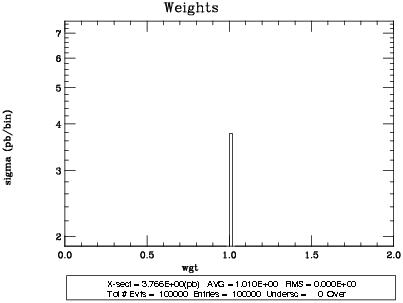
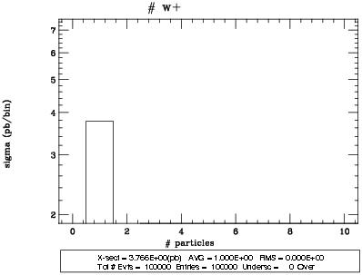
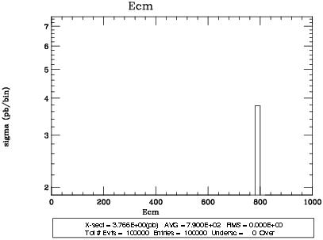
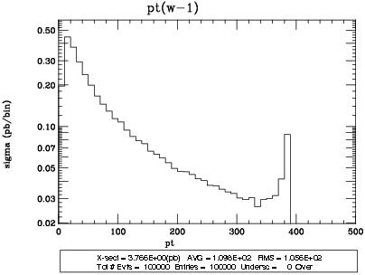
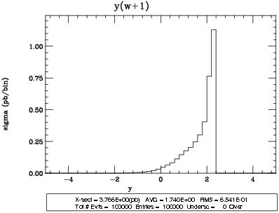
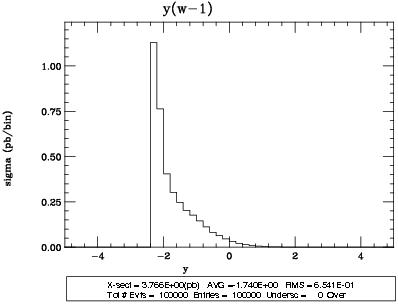
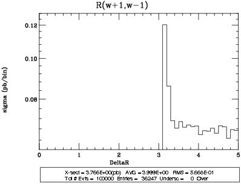
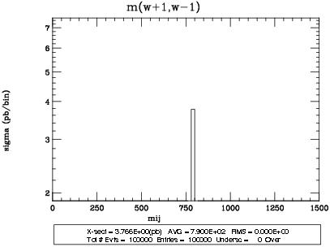

Plots for Unknown at parton level
| Name | Variable |
| weigth | weights of the events (normally 1) |
| Ht | scalar sum of pt of all particles + missing Et |
| pt(i) | transverse momentum |
| y(i) | rapidity in the lab |
| R(i,j) | distance in the (y,phi) plane |
| m(i,j) | invariant mass |
| cos(i,j) | angle between direction of i in the resframe of i+j and the direction of i+j in the labframe |

Download PS ma_plot000.ps

Download PS ma_plot001.ps
Download PS ma_plot002.ps

Download PS ma_plot003.ps

Download PS ma_plot004.ps
Download PS ma_plot005.ps

Download PS ma_plot006.ps

Download PS ma_plot007.ps

Download PS ma_plot008.ps

Download PS ma_plot009.ps

Download PS ma_plot010.ps
Download all plots in one postscript file
Download all plots in topdrawer format